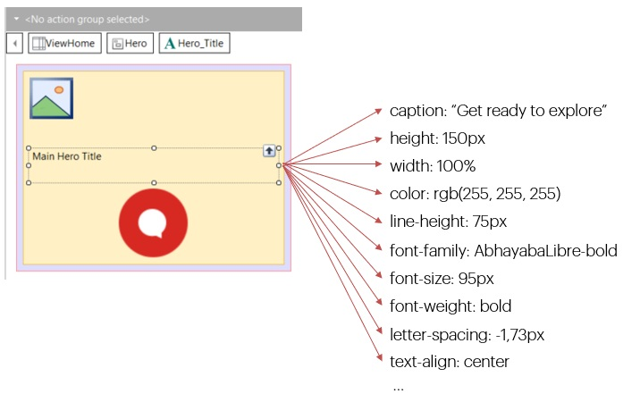
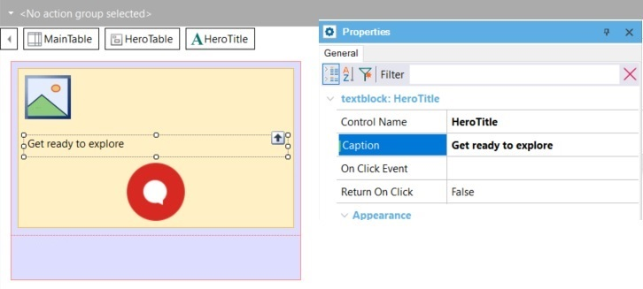
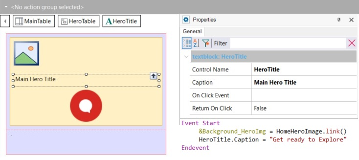

There are two ways: take each control as if it were unique and unrepeatable, or try to abstract and reuse. We will choose the second way as much as possible! In the DesignOps scenario, the designer will already start doing it and save you some of that work.
In general, a control on the screen has a given type that determines its behavior. For example, a Text Block is a control for displaying text. So, it will be associated with a Caption, which will be the text to display.
Besides these functional characteristics, however, it has design (style) characteristics that largely determine how it will be rendered in the output. For example, it will be displayed with a specific font color, font type, alignment, width, and so on, and its relevant characteristics will depend on the type of control.
The controls’ characteristics (mainly design features, but also some functional ones) are mainly declared through properties. For example, you’ve seen the properties to assign height and width values to the Canvas, to define the positioning of a control contained by the Canvas in relation to its edges, and the layer in which it will be located (Z-order).
On one hand, you could think of defining all properties at the individual control level (either statically or dynamically):

So, for example, if you have named your control HeroTitle, you could go to the properties window and define for Caption the value it will take at runtime:

Alternatively, you can leave a default value there and modify it dynamically using code, for example, in the Start event:

You could do the same, if GeneXus allowed it, for specific design properties, such as font size. But this would imply mixing characteristics that belong to this particular control, which has a specific name to identify it, with style characteristics that can be repeated in other controls.
If you choose this option, when designing another screen that requires an equivalent text in terms of its design functionality (being the main title on a dark background), you will have to repeat the same value assignments to its properties. And we already know the inconveniences caused by this.
Some design properties are usually specific, and others are not. For example, the sizes that controls should take, or their relative positions, are usually specific to that control in that layout. In this case, the height of the row where the canvas will be, the height and width of the canvas, and the positions of the controls relative to it will be rather specific. Therefore, they are defined as control properties. However, there are other properties that will be shared. How do we abstract them and then use them?
Since GeneXus 17 upgrade 6.
| Backlinks |
| Toc:Getting started with Design System Objects |